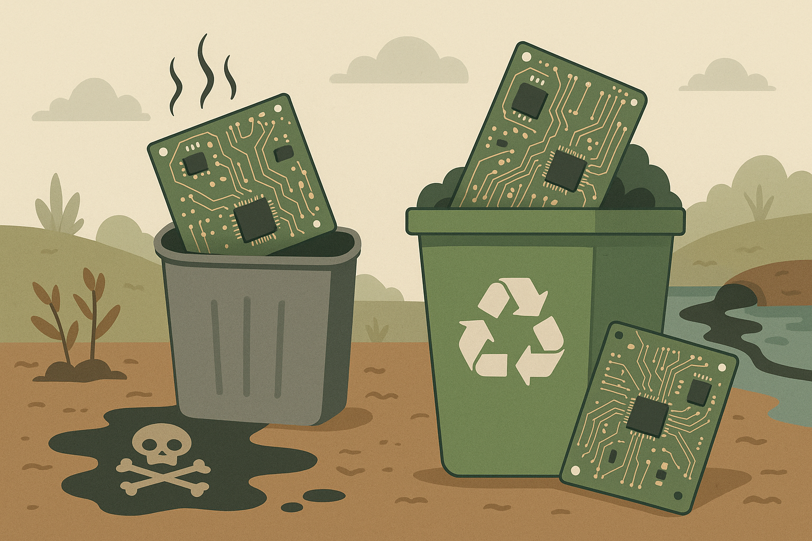

As placas eletrônicas estão presentes em praticamente todos os dispositivos modernos: celulares, computadores, televisores, eletrodomésticos e muito mais. Esses componentes são responsáveis pelo funcionamento dos equipamentos e concentram uma variedade de metais, incluindo cobre, ouro, prata, chumbo e níquel.
Quando descartadas de forma incorreta, as placas podem liberar substâncias tóxicas no meio ambiente, contaminando o solo e a água. Além disso, a reciclagem adequada permite a recuperação de metais valiosos e evita a exploração excessiva de recursos naturais, tornando o processo mais sustentável.
Jogar placas eletrônicas no lixo comum ou deixá-las em locais inadequados pode trazer sérios prejuízos:
Contaminação ambiental: Substâncias como chumbo, cádmio e bromo podem infiltrar-se no solo e contaminar lençóis freáticos.
Riscos à saúde: A exposição a metais pesados presentes nas placas pode causar problemas neurológicos, hormonais e respiratórios, principalmente para trabalhadores sem proteção adequada.
Desperdício de materiais raros: Muitos elementos presentes nas placas são escassos e valiosos. O descarte incorreto impede seu reaproveitamento e agrava a exploração mineral.
Acúmulo de lixo eletrônico: As placas se acumulam rapidamente em aterros e lixões, agravando o problema dos resíduos tecnológicos.
Para garantir o destino correto das placas eletrônicas, é importante seguir orientações específicas:
Leve a pontos de coleta de eletroeletrônicos: Ecopontos e centros de reciclagem recebem placas soltas ou dentro de equipamentos.
Procure empresas recicladoras certificadas: Algumas recicladoras são especializadas em tratamento de resíduos eletrônicos e realizam a separação segura dos componentes.
Use programas de logística reversa: Algumas fabricantes e assistências técnicas recolhem placas defeituosas para reaproveitamento de peças e materiais.
Participe de campanhas públicas: Prefeituras e ONGs frequentemente promovem mutirões de coleta de eletrônicos.
Não descarte no lixo comum: Além de ser prejudicial ao meio ambiente, o descarte irregular pode ser penalizado por lei.
Você sabia que uma tonelada de placas eletrônicas pode conter mais ouro do que uma tonelada de minério extraído da natureza? A recuperação desse material por meio da reciclagem é uma alternativa mais sustentável e econômica para a indústria.
Ao descartar corretamente esses componentes, contribuímos para a preservação ambiental, reduzimos a contaminação do planeta e valorizamos os recursos naturais. Faça sua parte: recicle com consciência.